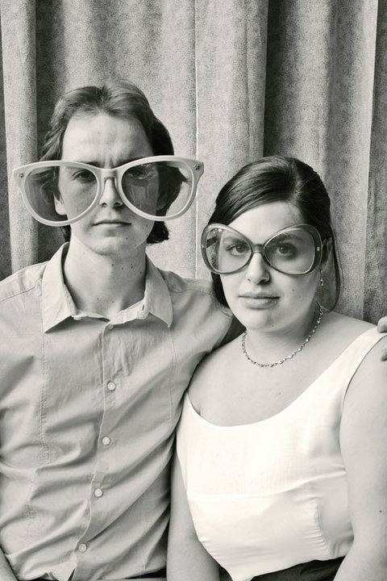

This is my dog; I call him Poli, which is short for Napoleon (I actually wasn't the one who named him). He is a 4 year old chihuahua/minpin mix that is extremely active, sometimes obnoxiously so. I've had him since May 2009, and as you can see he is very small (he was once about as tall as a can of soda). Now he's all grown up, weighing in at a massive 6 lbs, and spends most of his time eating, playing fetch, and sleeping.
DBC will be the longest period of time that I've spent without him trying to steal my warm spot on the sofa.
He is a big fan of anything he can put in his mouth, but especially:
Like most people I am infinitely quirkly over time, however I know that I need to select one thing to highlight. When recently going through some pictures of myself (i.e. when creating this page), I remembered that according to other people, I make a lot of strange faces. In the opinion of one friend, I suffer from RBS - go here to learn more about what that is if you don't already know.
Here is me in giant glasses at my friend's wedding (mildly unrelated, but it looked "quirky"). I don't have long hair anymore though.
Despite its tiny size, inside my kitchen you may find a wide variety of foods guaranteed to make you fat. Become my friend or coworker to learn more.
Call me: actually, don't
Email me: matthew.alan.higgins@gmail.com
Find me on Facebook & Twitter.